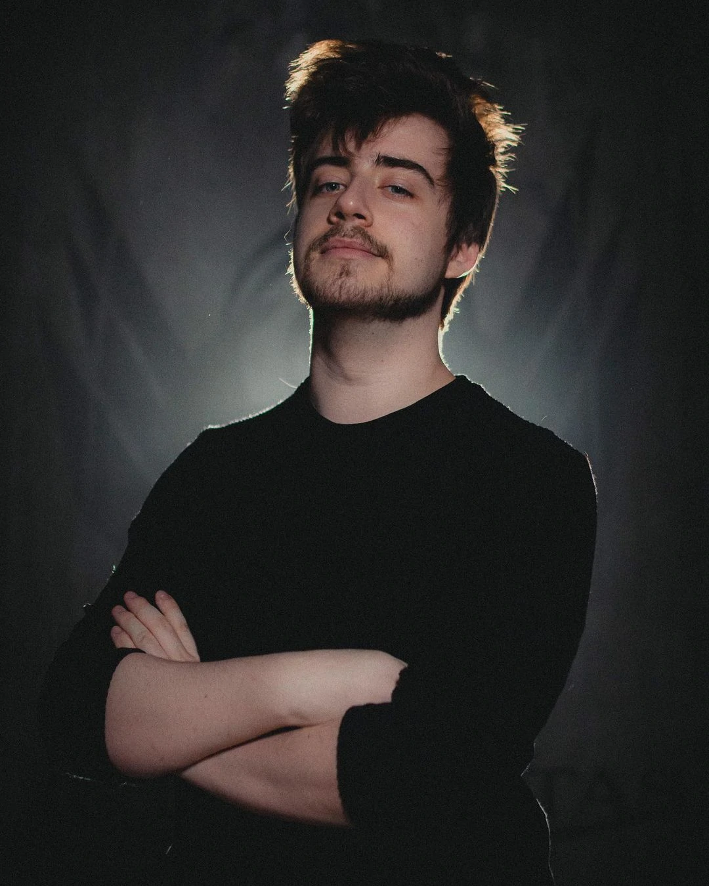
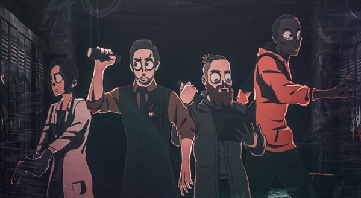
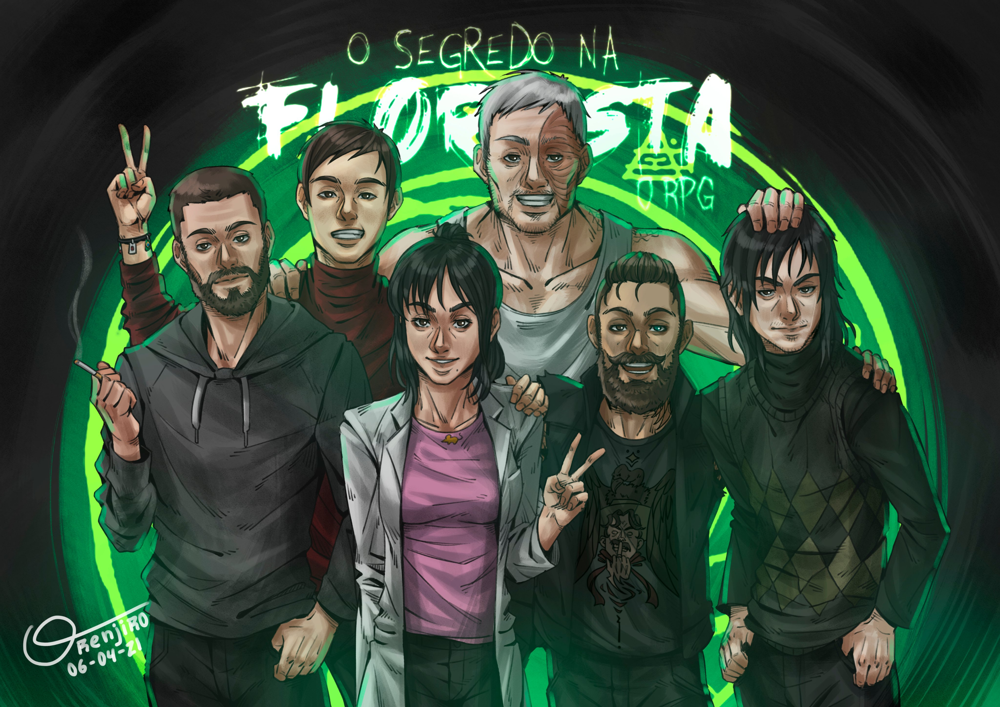
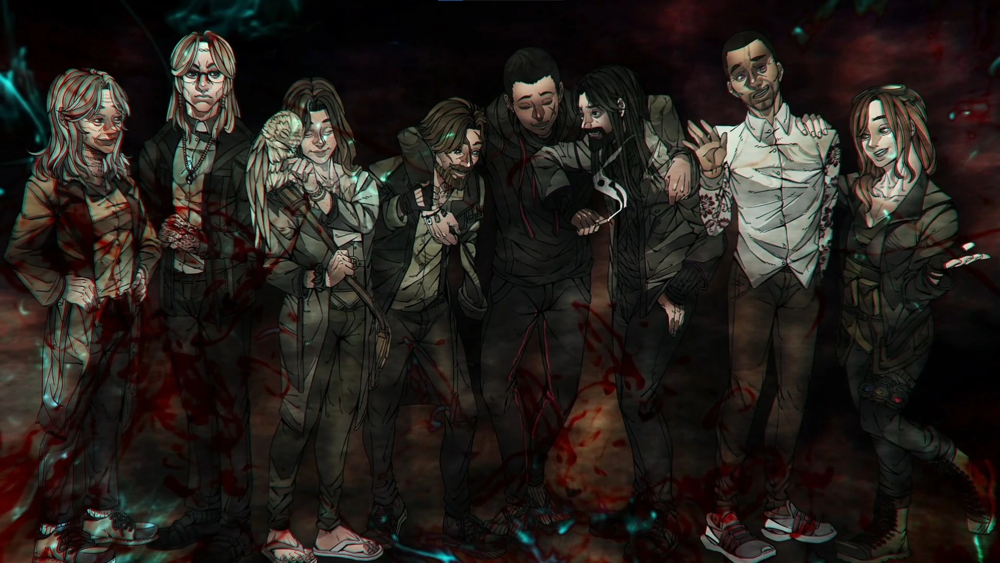
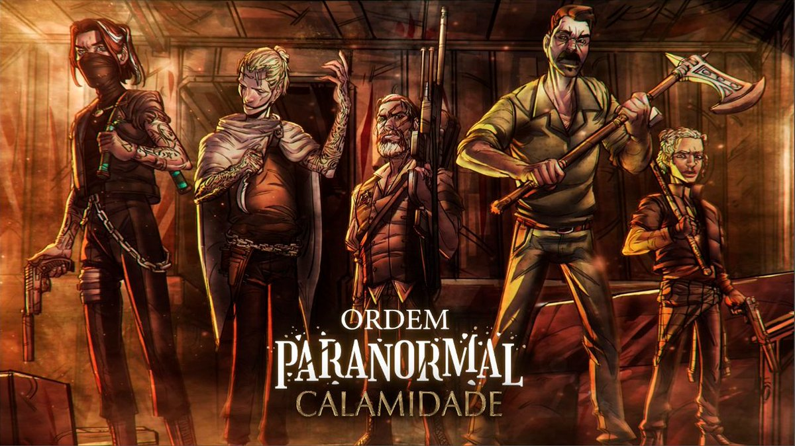
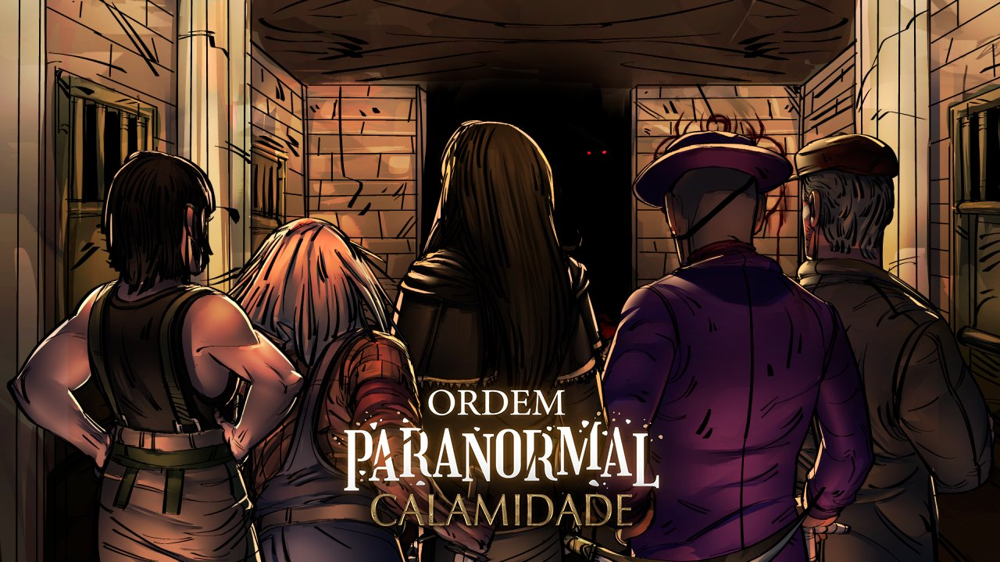

Sobre

Ordem Paranormal é um universo de investigação paranormal criado por Rafael Lange (Cellbit), que teve seu início através de campanhas de RPG de mesa em transmissões ao vivo na Twitch. Um jogo da saga, Ordem Paranormal: Enigma do Medo, tem previsão de lançamento para junho de 2022.
As Temporadas
A Ordem Paranormal
A Ordem Paranormal é a primeira campanha de um RPG de mesa, baseada no sistema de The Esoterrorists (Os Esoterroristas, em português) de Robin D. Laws. Mestrado pelo streamer e youtuber Cellbit, tem como personagens principais Alexsander Kothe, Daniel Hartmann, Elizabeth Webber e Thiago Fritz. Os dois episódios da campanha foram lançados no dia 29 de fevereiro e 7 de março de 2020 na Twitch. A série pode ser encontrada também no YouTube.

Elenco
- Cellbit
- Gabi Catuzzo
- Luba
- Ljoga
- Rakin
O Segredo Na Floresta
O Segredo Na Floresta é a segunda temporada da série Ordem Paranormal, continuação de A Ordem Paranormal. É uma campanha de RPG de mesa baseada em uma versão adaptada do sistema Chamado de Cthulhu (do inglês, Call of Cthulhu). Mestrada pelo streamer Cellbit, tem como protagonistas Cesar Oliveira Cohen, Cristopher Cohen, Elizabeth Webber, Joui Jouki, Thiago Fritz e posteriormente Arthur Cervero.
A série era jogada ao vivo na Twitch, e durou de 11 de abril a 25 de julho de 2020, compreendendo 16 episódios de, em média, 4 a 3 horas cada. Os episódios podem ser encontrados também no Youtube, no canal Lives do Cellbit.
Em 1° de agosto de 2020, houve uma stream especial em que os jogadores se reuniram para discutir os eventos da temporada e seus personagens, além de elucidar as dúvidas dos espectadores e revelar alguns dos segredos que não foram descobertos ao longo da série.

Elenco
- Cellbit
- Gabi Catuzzo
- Luba
- Ljoga
- Rakin
- Guaxinim
Ordem Paranormal: Desconjuração
Ordem Paranormal: Desconjuração é a terceira temporada de Ordem Paranormal, continuação de O Segredo na Floresta. ` É uma campanha de RPG de mesa baseado em uma versão adaptada pelo mestre do sistema Chamado de Cthulhu (do inglês, Call of Cthulhu). Mestrado pelo streamer Cellbit, é protagonizado por Arthur Cervero, Beatrice Portinari, Dante, Elizabeth Webber, Erin Parker, Fernando Carvalho, Joui Jouki, Kaiser e Luciano Carvalho.
A temporada teve um total de 20 episódios, transmitidos às 18 horas de todo sábado na Twitch do Cellbit. Todos os episódios também estão disponíveis no YouTube, no canal Lives do Cellbit.
Em 29 de maio de 2021, houve uma stream especial em que os jogadores se reuniram para discutir os eventos da temporada e seus personagens, além de elucidar as dúvidas dos espectadores e revelar alguns dos segredos que não foram descobertos ao longo da série.

Elenco
- Cellbit
- Guaxinim
- Calango
- Gabi Catuzzo
- Ljoga
- Kalera
- Triz Pariz
- Rakin
- Luba
Ordem Paranormal: Calamidade
Ordem Paranormal: Calamidade é a quarta temporada do RPG Ordem Paranormal, continuação de Ordem Paranormal: Desconjuração. É uma campanha de RPG de mesa baseada em um sistema exclusivo feito para o universo, criado pelo mestre junto da equipe de Skyfall RPG (Pedro Coimbra e Silvia Sala) e da equipe de Tormenta 20 (Felipe Della Corte e Guilherme Dei Svaldi). Mestrado pelo roteirista, streamer e diretor criativo, Cellbit, é protagonizado por dois lados: do lado da Ordem, sendo Antônio Pontevedra, Arthur Cervero, Carina Leone, Dante, Rubens Naluti e posteriormente Joui Jouki; do lado de Kian, sendo Artemis Deordelin Rodrigues, Boris Lukic, Damir Lukic, Gal e Theodore Bagwell.
A campanha foi anunciada previamente no último episódio de Desconjuração, mas foi anunciada oficialmente após o ARG de Calamidade no dia 29 de agosto de 2021. De acordo com o vídeo de anúncio, essa é a primeira temporada de RPG do universo feita presencialmente.
Todos os episódios são transmitidos às 18 horas de todo sábado na Twitch do Cellbit. Às terças, ocorre a reprise dos mesmos, também na Twitch, enquanto na quinta eles são disponibilizados no Youtube, no canal Lives do Cellbit. Como adicional da temporada, todas as quintas-feiras, às 17 horas na Twitch do Cellbit, ocorre um programa de perguntas e respostas sobre o RPG chamado Transcendendo, comandado por Leo Santi.

Elenco
Time Ordem
- Calango
- Gabi Catuzzo
- Rakin
- Luba
- Felps
- Guaxinim

Time Kian
- Zero
- Mount
- Ljoga
- Joao Miranda
- Triz Pariz